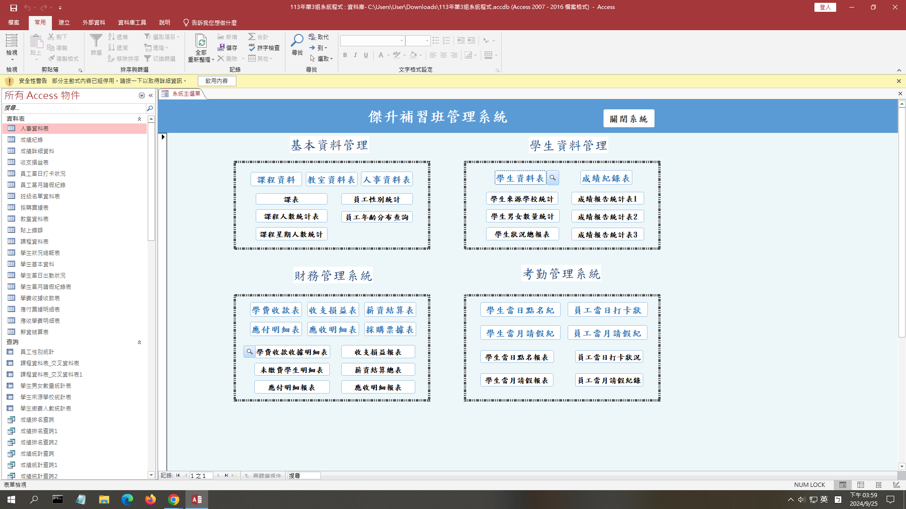

Portfolio
點擊查看完整海報
Feb 2024 – Dec 2024
大學畢業專題
資通訊技術應用於心理治療與健康風險管理之創新專利
以機會發現理論為基礎，運用文字探勘演算法 KeyGraph，分析專利資料庫中相關資通訊科技文件，建構專利技術知識地圖，探索醫療科技領域的發展趨勢與潛在創新機會。
點擊查看完整圖片
Feb 2024 – May 2024
研討會論文發表
2024 年 5 月｜第 18 屆創新管理知識社群國際研討會
《適用於心理治療與健康改善之資通訊科技創新專利技術的知識探勘》

點擊查看完整圖片
Feb 2024 – June 2024
系統分析與設計
補習班資訊管理系統
大學期間與組員合作，透過與補習班接洽和訪談了解其需求，接著依照需求進行系統分析與設計，並使用Microsoft Access軟體製作系統。
該系統由多個子模組組成，而我主要負責課程及教室管理系統的系統分析與設計文件撰寫，以及運用 Microsoft Access 進行實作。